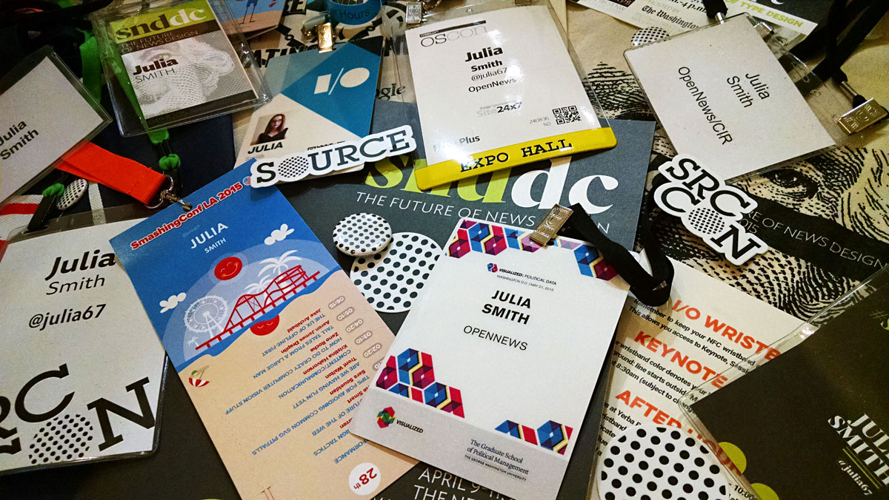

The Knight-Mozilla fellowship is super awesome. If you've ever wanted to work in a newsroom, build cool things, and travel a lot – you should apply.
I'm more than halfway through my fellowship now, and it’s neat to look back at all the things I’ve been able to do: I've worked on news apps, spoken at conferences, learned tons of new skills, participated in hackathons, traveled a bit… It’s been a fantastic experience so far.
Livia, Francis, Kavya, and Juan already shared their notes on life as a fellow, and I’ve been keeping track of my fellowship with monthly checkins: The First Month, The Second Month, The Third Month, The Fourth Month, The Fifth Month.
There's just one other thing I'd like to add.
In my experience, the most enjoyable, valuable aspect of the fellowship is simply the exposure to the rest of the journalism-developer community – the "news nerds," as they're sometimes called. These are folks who care deeply about journalism and technology, and there's a lot of crossover with other areas like open source, data science, design, civic tech, etc. This community is active and welcoming. Coming from the outside, it was surprising how immediately I identified with it.
I wasn't involved with OpenNews or the broader network before the fellowship started; in fact, I was barely aware it existed. I was very settled in Omaha – my hometown, which is notably not coastal – and although I was designing things, working with data, and writing code every day for work, I had never contributed to a real open source project. I had participated in a single civic hackathon, and it had been years since I had freelanced as a print designer for the local newspaper. I was dancing around the edge of news nerdery, but hadn't had the full introduction or the right opportunity to dive in.
Then I learned about the fellowship.
But enough with the backstory.
The point is: The Knight-Mozilla fellowship introduced me to this vibrant, friendly, and intellectually engaging group of people. Working in a major newsroom gives you the opportunity to connect with your coworkers – who are connected to their colleagues at various global organizations – and suddenly you're in an extended network of people who all care about journalism and tech. You also become part of a growing group of Knight-Mozilla alumni, which is a network in itself.
Additionally, the fellowship provides opportunities to interact with the extended community remotely via the OpenNews community calls, the NICAR listserv, and Twitter. It also provides the means to meet and collaborate in-person at code convenings, meetups, hack days, and conferences around the world. (Frequent travel is another fun new thing for me.)
And that's just five months' worth.
And meeting people at conferences is especially great because it's super easy to stay in touch with everyone afterwards – the expanded network is invaluable. It's awesome that you can travel to a city where you previously didn't know anyone, and now you can reach out to a new connection and either meet up or get suggestions for places to visit. And I realize this is an obvious sequence of events for many – but I never would've been comfortable doing that prior to this fellowship, and that speaks to the level of accessibility this community offers.
You know what's even better? We're here for you, too. Follow people on Twitter. Join a community call. Apply for a fellowship. If you're even tangentially interested in journalism and the open web, you're a news nerd already.
This is for you.
Still need some convincing? Read Noah Veltman's 2013 post on imposter syndrome: Code, the newsroom, and self-doubt. It did the trick for me.